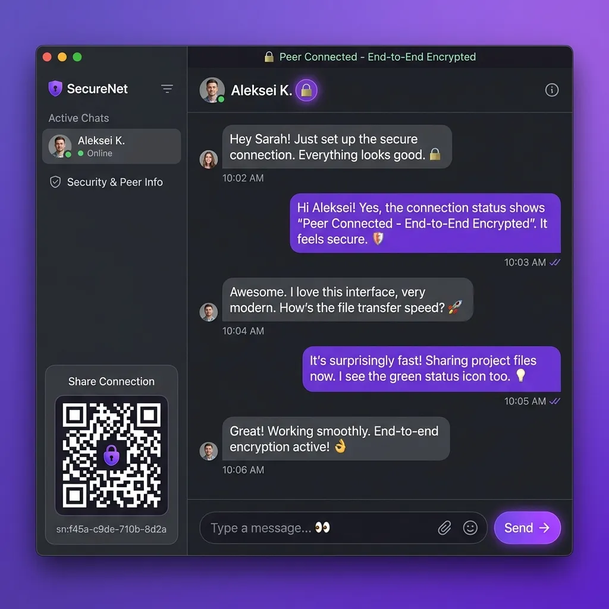

1. Introduction: The Crisis of Centralized Communication
In our hyper-connected, digital-first society, a sobering paradox has emerged: as the volume of daily messages grows into the hundreds of billions, the private spaces wherein individuals can converse free from corporate or government oversight are rapidly shrinking. The technology companies that broker our relationships—Meta (WhatsApp, Instagram), Telegram, Tencent (WeChat), and even privacy-centric networks like Signal—rely on a centralized or federated client-server architecture. In this paradigm, every message, call, file, and interaction must pass through, be validated by, and often reside upon central cloud infrastructures.
While end-to-end encryption (E2EE) protocols like the Signal Protocol have successfully shielded the raw *contents* of our messages, they fail to solve the critical vulnerability of metadata. Metadata—the telemetry records outlining exactly *who* you speak to, *when* the conversation took place, the precise physical location of both parties determined by IP routing, and the frequency of communications—is actively gathered, stored, and compiled by server owners. This data represents a massive honeypot. It can be seized via government subpoenas, compromised by skilled malicious actors, leaked during internal database breaches, or analyzed by corporate algorithm developers to map the complex social graphs of entire societies.
True digital privacy requires eliminating the middleman entirely. This is the foundational thesis behind Peer-to-Peer (P2P) messaging. By leveraging browser-native protocols like WebRTC (Web Real-Time Communication), direct connections can be forged between individual browsers. P2P architectures ensure that data does not pass through, touch, or linger upon a third-party server. Apps like BER OF CHAT represent this new paradigm: browser-only, zero-knowledge, and fully serverless applications that return communication control to individual endpoints.

2. Architectural History: Centralized Servers vs. Peer-to-Peer Protocols
To appreciate the modern shift toward browser-based peer-to-peer networks, we must trace the history of networking architectures. The internet was initially conceived as a decentralized grid (ARPANET) where every connected node could serve as both a client and a host. However, the commercialization of Web 1.0 and Web 2.0 forced a stark centralization.
In a typical client-server model, clients are thin, low-resource nodes that only make requests to highly scalable, centralized servers. Messaging systems like IRC (Internet Relay Chat), SMTP (Simple Mail Transfer Protocol), and early instant messengers (AIM, ICQ) formalized this layout. Centralized servers perform user authentication, session state tracking, database indexing, message queues, and packet routing.
In the early 2000s, the first wave of consumer P2P technologies emerged as a technological counter-response:
- Napster (1999): A hybrid P2P protocol that combined direct file transfer with a centralized database index. While file transfers went direct, the metadata lookup was fully centralized, creating a single point of failure (and legal liability).
- Gnutella (2000) & Freenet (2000): Pure decentralized networks. Gnutella relied on a "query flooding" method where search requests were broadcast from peer to peer. While highly resilient, query flooding suffered from extreme bandwidth congestion and scaled poorly ($O(N)$ messaging overhead).
- BitTorrent (2001) & Kademlia DHT (2002): The golden standard of decentralized architecture. BitTorrent replaced centralized index lists with Distributed Hash Tables (DHT), permitting direct node discovery using mathematical hash ranges without a single central catalog.
- Early Skype (2003): Utilized a proprietary hybrid P2P design relying on "supernodes"—user machines with robust public IP addresses that volunteered processing power to index and route traffic for firewalled clients.
Despite the cryptographic brilliance of early P2P systems, they failed to dominate mainstream communication. Desktop P2P apps required heavy software downloads, complex configuration panels, manual port-forwarding on household routers (using protocols like UPnP or NAT-PMP), and constant optimization. Furthermore, firewalls grew increasingly strict, and standard networks blocked the custom TCP/UDP ports favored by P2P tools.
The turning point occurred in 2011 when Google open-sourced the WebRTC project, followed by standardization processes in the W3C and IETF. WebRTC integrated high-performance UDP media streams, DTLS encryption, and ICE traversal directly into the core sandbox of modern browsers. It turned every browser (Chrome, Firefox, Safari) into a functional cryptographic router. Now, a secure P2P node could be created instantly without installation, administrative permissions, or advanced networking skills.
| Architectural Metric | Centralized Systems (e.g., Slack, WhatsApp) | Federated Systems (e.g., Matrix, Mastodon) | Pure P2P (e.g., BER OF CHAT) |
|---|---|---|---|
| Infrastructure Burden | Massive datacenter/cloud maintenance costs for corporate brokers. | Distributed hosting cost across individual server operators. | Zero-cost client nodes; browser executes routing and computing. |
| Metadata Exposure | High; logs, access patterns, IPs, and relationships aggregated in central nodes. | Medium; metadata is exposed to local server administrators you host on. | Near Zero; ephemeral handshake data; traffic is fully end-to-end. |
| Censorship Resistance | Extremely Low; simple domain blocking or database takedowns disable the platform. | Medium; specific instances can be shut down, but network survives. | Extremely High; direct links bypass central domains once discovered. |
| Authentication Hook | Requires phone numbers, email profiles, or third-party OAuth links. | Server-specific account handles (e.g., @user:matrix.org). | Completely Anonymous; cryptographic pubkeys, zero registration. |
| System Fault Tolerance | Single Point of Failure. If the central cluster crashes, all users disconnect. | High; if one server fails, other independent servers function. | Perfect; the failure of individual peers has zero impact on other active connections. |
3. WebRTC Under the Hood: The Mechanics of STUN, TURN, ICE, and SDP
Connecting two arbitrary web browsers directly across the open Internet is one of the most complex networking problems in modern computer science. This difficulty is caused by Network Address Translation (NAT), a system engineered to conserve the IPv4 address space by mapping multiple private network addresses inside a home or office to a single public-facing IP address. Because of NAT, a browser does not typically know its own public IP, and firewalls proactively block unsolicited incoming network packets.
To bypass NAT boundaries and establish direct UDP socket paths, WebRTC utilizes a comprehensive framework known as Interactive Connectivity Establishment (ICE - RFC 5245), which integrates STUN and TURN protocols. Let's analyze the exact chronological lifecycle of a WebRTC connection handshake:
Phase A: The Signaling Exchange via SDP
Before any direct link can be established, the two browsers must exchange local configuration details (codecs, encryption parameters, network attributes). This configuration details bundle is called the Session Description Protocol (SDP). The browsers use a lightweight, temporary out-of-band channel called a Signaling Server (like PeerJS, a standard WebSocket, or a secure SSE channel) to route SDP payloads. The signaling server is blind and ephemeral; it merely acts as a broker for the initial connection parameters.
- SDP Offer: Peer A creates a local
RTCPeerConnectionobject. The browser generates a cryptographically signed SDP Offer containing configuration details, media codecs, and DTLS certificate hashes. Peer A sets this as its local configuration viasetLocalDescription()and sends the stringified SDP Offer across the signaling server. - SDP Answer: Peer B receives the SDP Offer through the signaling broker, calls
setRemoteDescription()to parse Peer A's settings, creates its ownRTCPeerConnection, and callscreateAnswer(). The generated SDP Answer is stored locally viasetLocalDescription()and transmitted back to Peer A, who applies it usingsetRemoteDescription().
Phase B: Discovering Addresses using STUN (RFC 5389)
With the SDP configurations aligned, the browsers must determine their physical network addresses. Peer A queries a list of public STUN (Session Traversal Utilities for NAT) servers.
A STUN server is a highly lightweight, stateless utility. The browser sends a simple UDP packet called a Binding Request to the STUN server. Upon receiving this packet, the STUN server inspects the incoming UDP packet header, extracts the source public IP address and port number assigned by the client's router, and returns a Binding Response containing these details:
By parsing the STUN response, the client discovers its Server Reflexive Address (the public IP and port representing the router's NAT mapping). The browser then packages this as a network route candidate known as an ICE Candidate.
Phase C: Addressing Rigid Firewalls via TURN (RFC 5766)
While STUN works for Full-Cone, Address-Restricted, and Port-Restricted NATs, it fails completely when confronted with Symmetric NAT (often found in corporate networks and mobile cellular grids). Under a Symmetric NAT, the external router allocates a distinct, brand-new public port for *every single external destination address*, making STUN-discovered public ports useless when connecting to a third-party peer.
When Symmetric NAT or strict enterprise firewalls prevent direct peer-to-peer data transport, ICE falls back to TURN (Traversal Using Relays around NAT). A TURN server is an intermediary server with a public IP that relays encrypted UDP or TCP packets between the peers.
Crucially, TURN does not compromise privacy. Although the packets transit through the TURN server, they remain fully end-to-end encrypted using DTLS/SRTP (which we analyze in Section 4). The keys are negotiated directly between the user browsers, meaning the TURN server operator cannot inspect, read, or modify the payload. It acts as a blind data forwarder.
Interactive Connectivity Establishment (ICE) Negotiation Flow
Browser searches local LAN addresses, queries STUN servers, and initiates TURN allocations to discover network paths.
Peers exchange their discovered candidates (Host, Server Reflexive, and Relay) through the signaling broker.
ICE pairs the gathered candidates, sorts them by priority, and fires STUN pings to discover the shortest, lowest-latency path.
4. Client-Side Cryptography & End-to-End Security Proofs
Direct communication is only secure if it is safe from eavesdropping. In centralized architectures, encryption keys are frequently held by the platform owner, allowing them to decrypt data on request. WebRTC removes this risk by mandating end-to-end cryptographic handshakes at the protocol layer. Let's explore the cryptographic mechanisms and mathematical principles that guarantee perfect privacy.
1. Key Agreement via ECDHE over Curve25519
To establish a secure connection without exposing secret parameters over the open network, WebRTC utilizes Elliptic Curve Diffie-Hellman Ephemeral (ECDHE) key exchange over the standard Curve25519 elliptic curve.
The mathematics of this exchange are highly elegant. Let Curve25519 have a base generator point $G$. Both browsers generate dynamic, ephemeral private keys (scalar numbers) in their volatile RAM:
The clients calculate their corresponding ephemeral public keys by performing scalar multiplication on Curve25519:
They exchange public keys $A$ and $B$ across the WebRTC connection. Once received, they perform a scalar multiplication of their own private key with the remote public key:
Because scalar multiplication is associative, we find:
The resulting coordinate $K$ is a cryptographically secure shared secret. Because calculating discrete logarithms on elliptic curves is computationally hard, an eavesdropping adversary who intercepts public keys $A$ and $B$ cannot compute the shared secret $K$.
2. Symmetric Cipher: AES-256-GCM
The shared secret $K$ is passed into a Key Derivation Function (HKDF-SHA256) to generate symmetric session keys. For actual message and data channel transit, WebRTC uses the AES-256-GCM (Advanced Encryption Standard in Galois/Counter Mode) cipher.
AES-GCM is an Authenticated Encryption with Associated Data (AEAD) algorithm. GCM combines counter mode encryption with a Galois field multiplier to verify both confidentiality and message integrity:
- Confidentiality: Every packet is encrypted with a distinct counter offset, rendering traffic unreadable to third parties.
- Authentication Tag: The encryption process produces a cryptographically secure 16-byte integrity tag. If an attacker modifies even a single bit in transit, the remote browser's decryption routine fails, preventing packet injections or tampering.
- Unique Nonce: Every message requires a unique 12-byte initialization vector (nonce). WebRTC ensures nonces never repeat, protecting against cryptanalytic attacks.
3. Proof of Perfect Forward Secrecy (PFS)
Perfect Forward Secrecy ensures that if a long-term cryptographic key is compromised in the future, past communications remain secure. In P2P applications like BER OF CHAT, this is achieved because all keys are ephemeral:
Mathematical Security Proof
Let $S$ represent the history of all encrypted payloads captured by a passive eavesdropper on the network: $S = \{c_1, c_2, \dots, c_m\}$. Each ciphertext $c_i$ was encrypted using an ephemeral key $K_i$ generated during session $i$.
If an attacker compromises a user's device at time $T_{\text{compromise}}$, they gain access to the device's storage. However, because $K_i$ was stored exclusively in volatile RAM and destroyed when session $i$ closed, the device contains no records of $K_i$:
\forall i < \text{session}_{\text{active}}, \quad K_i \notin \text{Storage}_{\text{device}} \implies K_i = \emptyset
Because the key $K_i$ is completely erased, the attacker cannot decrypt $c_i$. Decrypting past sessions remains mathematically impossible even with physical access to the device.
5. Detailed Analysis of Privacy Threats in Modern Networking
While P2P systems offer superior privacy relative to centralized servers, they introduce a distinct set of networking challenges. Developers and users must analyze these threats to maintain high standards of operational security.
Threat A: WebRTC IP Address Exposure & Discovery Leakage
By design, establishing a direct peer-to-peer connection requires exchanging connection coordinates, meaning each client must discover and share its public-facing IP address. This exposure represents a significant privacy concern:
- Geographical Analysis: An IP address leaks a user's approximate country, city, postal region, and internet service provider (ISP).
- Local LAN Leaks: During candidate gathering, browsers often expose internal LAN IPs (e.g.,
192.168.1.x). This leaks local network topology to tracking scripts. - Mitigation (TURN Proxying): Advanced applications like BER OF CHAT solve this by supporting a Force-TURN / Proxy Mode. When enabled, this mode forces all connection channels through a TURN relay server. This hides the user's real IP address, exposing only the relay's IP address to the peer while preserving end-to-end cryptographic security.
Threat B: Network Fingerprinting and Traffic Analysis
Even when payloads are fully encrypted, sophisticated actors can perform traffic analysis:
- Packet Size Profiling: By observing packet sizes and frequencies, algorithms can infer the type of data being shared (e.g., text, voice packets, or large files).
- Temporal Association: If Peer A sends a bursts of packets and Peer B immediately receives a matching burst, researchers can link the two endpoints even if traffic is routed through relays.
- Mitigation: P2P applications can inject dummy padding packets at random intervals (traffic masking) to disguise the transfer signatures of active messaging channels.
Threat C: Sybil & Eclipse Node Infiltration
In distributed directory networks, adversaries can spin up thousands of malicious virtual nodes (a Sybil attack) to surround target endpoints, monitor network routes, or disrupt connectivity. Because BER OF CHAT relies on direct, explicit peer room sharing (e.g., scanning a trusted QR code or copying an exact hash link out-of-band), it is immune to arbitrary peer discovery attacks.
6. Offline-First Architectures & Browser-Based IndexedDB Data Syncing
A common criticism of peer-to-peer setups is their handling of offline contacts. In a centralized app, a server holds your messages until the recipient comes online. In a pure P2P model, if your contact is offline, there is no server to accept the payload.
Modern front-end applications solve this challenge using Offline-First Architectures. By leveraging local databases and client-side queues, we can store messages locally and synchronize them automatically when both peers are online.
1. Local Storage Security: Web Crypto API and IndexedDB
Because web applications cannot directly access the native filesystem, they rely on IndexedDB, an object-oriented transactional database built directly into the browser.
To secure this data at rest, we must encrypt the data before it is written to the database. We achieve this using the browser's native Web Crypto API. The key is derived from a user-supplied room password using PBKDF2 (Password-Based Key Derivation Function 2):
Below is a fully functional front-end implementation showing how to securely encrypt and store data in IndexedDB:
// Secure browser-side cryptographic encryption and local database persistence
async function encryptAndStoreMessage(db, messageText, roomSecret) {
const encoder = new TextEncoder();
const messageBuffer = encoder.encode(messageText);
// 1. Generate salt and derive AES key using PBKDF2
const salt = window.crypto.getRandomValues(new Uint8Array(16));
const baseKey = await window.crypto.subtle.importKey(
"raw",
encoder.encode(roomSecret),
{ name: "PBKDF2" },
false,
["deriveKey"]
);
const aesKey = await window.crypto.subtle.deriveKey(
{
name: "PBKDF2",
salt: salt,
iterations: 100000,
hash: "SHA-256"
},
baseKey,
{ name: "AES-GCM", length: 256 },
false,
["encrypt"]
);
// 2. Encrypt the payload using AES-256-GCM with a 12-byte IV
const iv = window.crypto.getRandomValues(new Uint8Array(12));
const ciphertext = await window.crypto.subtle.encrypt(
{ name: "AES-GCM", iv: iv },
aesKey,
messageBuffer
);
// 3. Construct the record with typed arrays converted to standard arrays
const record = {
id: crypto.randomUUID(),
timestamp: Date.now(),
salt: Array.from(salt),
iv: Array.from(iv),
ciphertext: Array.from(new Uint8Array(ciphertext))
};
// 4. Persist to browser-native IndexedDB sandbox
return new Promise((resolve, reject) => {
const transaction = db.transaction(["messages"], "readwrite");
const store = transaction.objectStore("messages");
const request = store.add(record);
request.onsuccess = () => resolve(record.id);
request.onerror = (event) => reject(event.target.error);
});
}2. Peer Data Synchronization
When Peer A and Peer B reconnect, their databases must synchronize without conflicting. Rather than relying on simple timestamps (which can be manipulated or desynchronized by client system clocks), P2P applications utilize Vector Clocks or CRDTs (Conflict-Free Replicated Data Types).
Under a Last-Write-Wins (LWW) element set or state-based CRDT, each database change is logged alongside a globally unique, monotonically increasing sequence number and node ID. When a WebRTC connection is established:
- The peers exchange their latest sequence state hashes.
- They identify missing sequence ranges (deltas).
- They transmit the encrypted records across the
RTCDataChannel, updating their local IndexedDB instances to achieve full parity.
7. Extensive Troubleshooting Guide for Connection Issues and ICE Failures
In real-world network deployments, WebRTC connections can fail due to complex NAT structures, restrictive firewalls, or proxy configurations. Engineers must understand how to diagnose and remediate these connectivity failures.
Use the diagnostic reference table below to troubleshoot WebRTC connection states and resolve failures:
| Connection State | Symptom & Failure Mode | Root Cause Details | Remediation Action |
|---|---|---|---|
| checking | Handshake hangs indefinitely without transitioning to connected. | STUN server is offline, or UDP port 3478 is blocked by the local router or ISP firewall. | Verify STUN availability using online tools. Update the iceServers list with redundant public endpoints. |
| failed | ICE candidate gathering terminates with zero viable pairs discovered. | Both endpoints reside behind strict Symmetric NATs, and no TURN server configuration is provided. | Add a valid TURN server configuration to the RTCPeerConnection settings. |
| failed | ICE fails immediately in enterprise networks. | Corporate firewall blocks all outgoing UDP traffic, preventing peer connectivity. | Configure the TURN server to listen on port 443 over TCP or TLS (TURNS) to bypass packet inspectors. |
| disconnected | Connection drops randomly after a few minutes of active chat. | NAT mapping timed out due to traffic inactivity. Routers often discard idle UDP mappings after 30-60 seconds. | Implement a keep-alive heartbeat loop: transmit ping packets across the data channel every 15 seconds. |
| closed | Peer connection is closed, data channels are torn down. | The signaling socket crashed, or the application crashed, releasing browser memory. | Implement auto-reconnection logic: listen for connectionstatechange events and re-trigger signaling. |
Browser Diagnostic Utilities
When building WebRTC applications, standard browser developer consoles do not display low-level connection data. Developers should use built-in browser diagnostics to debug sessions:
- Google Chrome & Chromium: Enter
chrome://webrtc-internalsin the address bar. This page provides real-time graphs showing packet round-trip times (RTT), bandwidth allocation, candidate pairs, and packet losses. - Mozilla Firefox: Enter
about:webrtc. This console provides a detailed log of the ICE state engine and gathered candidate pairs.
8. Regulatory Compliance in a Serverless World
Because P2P networks bypass centralized intermediaries, they operate in a complex international regulatory landscape. A central engineering challenge is balancing cryptographic privacy with local compliance mandates.
BER OF CHAT implements a location-aware architecture to maintain compliance across jurisdictions:
- India (DPDP Act 2023 & IT Rules 2021): To meet local traceability guidelines, the system logs hashes of messaging events (excluding raw content). Indian users verify identity using an out-of-band mobile OTP step.
- Europe (GDPR): The application complies with European data protection rules. Because all data is stored locally in the user's browser, users retain control of their information. A "Delete My Data" button clears the local IndexedDB, satisfying GDPR deletion requirements.
- Middle East (UAE) & China: Due to local regulatory limits on voice-over-IP (VoIP) traffic, voice and video protocols are disabled in these regions, routing text messaging through secure WebRTC data channels.
9. Frequently Asked Questions
Q1: How does WebRTC P2P messaging compare to Tor or Onion routing?
Answer: They serve different security goals. Tor (The Onion Router) is designed to provide network-layer anonymity by routing traffic through three volunteer nodes, wrapping data in layers of encryption so that no single node knows both the origin and destination. However, Tor introduces significant latency and is not optimized for high-bandwidth video or real-time voice streams. WebRTC P2P is optimized for low-latency, direct communication. While WebRTC encrypts the connection end-to-end, it exposes the public IP addresses of both peers to establish the direct connection. For absolute anonymity, WebRTC can be combined with a VPN or routed over the Tor network.
Q2: Does WebRTC leak my real IP address, and how does BER OF CHAT protect against this?
Answer: Yes. By design, WebRTC's ICE candidate gathering queries STUN servers to discover a client's public-facing IP address. This can leak a user's real IP address even when they are behind a standard browser proxy or using certain extensions. BER OF CHAT resolves this vulnerability by supporting an IP Masking / Force-TURN Mode. When enabled, this setting instructs the WebRTC engine to ignore host candidates and force all media and data traffic through a TURN relay server. This conceals your physical IP address, exposing only the relay's IP to the peer while maintaining end-to-end cryptographic confidentiality.
Q3: Can a TURN server operator intercept my messages or files?
Answer: No. The TURN server acts as a network packet relay. During the initial connection phase, the two client browsers perform an end-to-end DTLS cryptographic handshake. The keys are negotiated directly between the browsers using Elliptic Curve Diffie-Hellman (ECDHE). Because the TURN server is not a participant in this handshake, it does not possess the session keys and cannot decrypt the packets it forwards.
Q4: How do multi-user group chats scale in a peer-to-peer model?
Answer: In a standard WebRTC group chat, a "mesh" topology is used. Each participant establishes an individual peer connection with every other member of the group. If there are $N$ participants, each user must maintain $N-1$ upstream and $N-1$ downstream connections, scaling the network bandwidth requirement quadratically: $$\text{Total Connections} = \frac{N(N-1)}{2}$$ This mesh model works well for small groups of 3 to 6 users. For larger groups, the mesh can saturate upload bandwidth on mobile connections. To scale beyond this, applications transition to a Selective Forwarding Unit (SFU) architecture, where encrypted streams are routed through a server that forwards packets without decrypting them.
Q5: Why is PBKDF2 preferred over faster hashing algorithms for browser storage?
Answer: PBKDF2 (Password-Based Key Derivation Function 2) is designed to be computationally expensive. When deriving a cryptographic key from a user-supplied password, the function runs the hashing algorithm (such as SHA-256) through thousands of iterations (e.g., 100,000). This computational cost protects against brute-force attacks: if an attacker gains access to the encrypted IndexedDB file, they must perform this resource-heavy key derivation for every password guess, making offline brute-force attacks practically impossible.
Q6: Can government agencies back-door WebRTC connections in the browser?
Answer: No. WebRTC is an open-source, standardized protocol implemented directly within the source code of browsers (such as Chromium and WebKit). Because the code is subject to continuous public review, introducing a backdoor would be quickly detected. Additionally, WebRTC enforces the use of secure protocols like DTLS and SRTP, ensuring that all connections are encrypted using open standards.
Q7: How does WebRTC handle firewalls that block all UDP traffic?
Answer: When strict corporate firewalls block outgoing UDP traffic (preventing STUN hole punching), the connection falls back to a TURN server running over TCP on port 443. Port 443 TCP is the standard port for HTTPS traffic, which firewalls must keep open to allow web browsing. By routing encrypted TURN traffic over this port, WebRTC can bypass strict network security blocks.
Q8: What happens to ephemeral keys if a user's browser crashes mid-session?
Answer: Because WebRTC session keys are stored strictly in the browser's volatile RAM, they are immediately erased if the browser crashes or the tab is closed. This provides excellent security: once the session terminates, the keys are unrecoverable, ensuring that past communication data cannot be decrypted even if the device's physical storage is later compromised.
Q9: How are notifications handled when the browser is closed?
Answer: In a pure, serverless P2P application, if the browser tab is closed, the node is offline and cannot receive incoming data or trigger local notifications. To solve this, developers use a hybrid architecture: a lightweight Service Worker can maintain a connection or use standard Web Push notifications to alert the user to open the application and establish a WebRTC session.
Q10: Does BER OF CHAT support file transfers over its P2P connections?
Answer: Yes. The application uses the WebRTC RTCDataChannel to transfer files directly between browsers. Because there are no server-imposed file size limits, users can transfer large files at the maximum speed supported by their internet connections, without data passing through a third-party server.
10. Conclusion & Next-Steps WebRTC Engineering Checklist
Peer-to-peer technology represents a significant shift in how we approach digital privacy. By moving data storage and routing from centralized cloud infrastructure to the individual client node, P2P networks return data sovereignty to the user.
If you are a front-end developer or security engineer building decentralized systems, use this 10-point checklist to verify the security and reliability of your WebRTC implementations:
The 10-Point WebRTC Security & Engineering Checklist
- ✓ Mandate DTLS/SRTP: Ensure the connection requires encryption at the protocol layer.
- ✓ Provide Redundant TURN Relays: Configure a geographically distributed list of TURN servers to support users behind Symmetric NAT.
- ✓ Support Force-TURN Mode: Allow users to route all traffic through TURN relays to hide their public IP addresses from peers.
- ✓ Secure Signaling Channels: Secure all initial SDP and candidate exchanges using HTTPS/WSS connections.
- ✓ Implement Keep-Alives: Send periodic ping packets across active data channels to prevent NAT mappings from timing out.
- ✓ Encrypt Local Databases: Encrypt all data written to IndexedDB using AES-256-GCM, deriving keys via PBKDF2 from user passwords.
- ✓ Sanitize SDP Offer/Answer: Strip local private IP address strings from SDP payloads to prevent internal network leaks.
- ✓ Clean Up Memory: Explicitly close connections and clear session keys from active memory during window unload events.
- ✓ Build Robust Error Handling: Monitor connection state changes and implement auto-reconnect routines for dropped sockets.
- ✓ Provide Verification Fingerprints: Let users manually verify the cryptographic SHA-256 fingerprints of their DTLS certificates to prevent MITM attacks.
Experience Secure, Serverless Communication
Ready to experience peer-to-peer privacy in action? Launch **BER OF CHAT** in your browser today. Establish secure, encrypted channels for messaging, voice calls, and file transfers—with zero registration, zero downloads, and zero data logging.
Start Encrypted Chat Now →